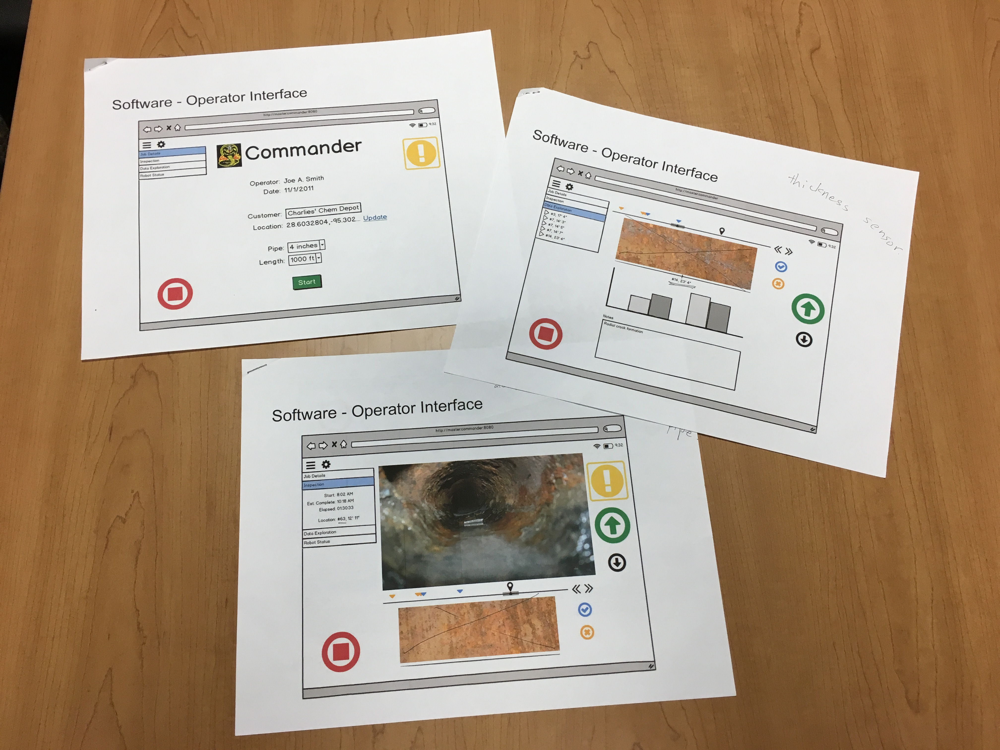

Snake Robot Control Interface
- Client: HMI
- Date: February 2017 -
- Service: User Experience, User Interface
- Tools: Photoshop, Illustrator, HTML, CSS, Javascript, Nodejs

Brief Concept of Snake Robot
The birth of the snake robot is to finish the task of pipe inspection automatically. Once it's deployed into the oil pipe, the wireless robot moves forward and scans the inner walls for any cracks or residues. Once the imperfection is found, the field technicians will replace the corresponding pipe sections. The control and communication of the robot from operators are all dependent on the web interface.
Interface Design Requirements and First Concept
The highlights of our robot are wireless and automatic which is a big difference from the other similar kinds. These also increase the difficulty of interface design and its development. The following is the initial mockups of the interface design based on the requirements.
 (First mockup of the web interface.)This is a very quick and rough mockup. The function of the design is to build the foundation and make some basic UX decisions, e.g. the number of pages, the arrangement of pages, what are the contents in each page, whether the requirements are fully met, what information are redundant and do we want to have those redundancies. The main requirements at this stage are video streaming (which is very hard due to the wireless feature), the analysis of the inner wall condition, the robot movement control, the health and condition of the robot. These requirements were made by team discussion and market research of similar products.
(A note of timeline, technical key points, some requirements.)The Iteration Starts and First Version of Interface
After the basic mockup was roughly done, we started to think sbout the details of each page and element.
First comes the layout.
(Some of the layout concepts.)The image above showed the different layout concepts. We want to decide where to locate the main menu, submenu, videos, data, control panels. And analyze the good and bad of different layouts in terms of usability, accessibility, safety and consistency.
One of the decisions we made in this step was not to make the menu pop up too much. It should be easy to see when you need it, but "hide" itself when you were doing real operations. The menu should also not take much of the screen space. The valuable space in such a robotic system is going to left for robot data. Because the menu items are very few, thus we decided to locate the menu vertically on left. As for elements in each page, because they are in different functions, we used a cardboard style in order to allow users to find some consistency in the interface. Therefore we came up with the following control page.
(Layout of the control page.)Based on these decisions, we made a first high-fidelity mockup in order to move on to the next stage.
(First simple version of interface.)You may notice this is a very simple and rough version. This is because for this agile team, twe need a minimum viable product to integrate the backend code and control algorithms into the web interface in order to make our demo of the robot in one month. This interface iteration happened in less than three weeks from a initial idea to the final peototype in the code level (HTML, CSS, Javascript).
Think about Details and Update the Interface
This is actually the fun part. Although some of the materials for this part are missing, I can still give you a good understanding of that happened in these four months.
After the successful demo in March in a pipe inspection robot presentation, we finally were able to sit down and rethink the design decisions we made and sculpted the details of the interface.
1. First was the color.
The theme we used to use is dark and vague mainly because we want to keep our branding which is dark grey and orange. But our hardware product is a white happy snake, who deserved a companion which shared the same style and attitude as his. In other words, the software and hardware should be somewhat shared consistency. And this happened from changing the color of the UI.
We rethought about our company brand and decided to emphasize the brand by orange and dark grey (similar to black) for the main elements. And used normal red, green, yellow for another status to allow users to easily move from traditional control system into ours.
We also found the dark theme is hard to observe under strong sunlight, where this kind of operations mostly happens. Therefore we switch the interface into a light theme, using large spaces of white. This would benefit the data plotted on the screen as well.
(The sketch of new designs of interface.) (The new and final interface design.)2. Second is the layout.
We changed the layout and page arrangement based on observation, interviews and screen size calculation. The control page and data plotting page are combined into one page because users tended to switch between control and data before. They are equally important and frequently used in a real inspection process. Another change is the cardboard sizes. They were decided by precise calculation. We used a heat map to present the inner pipe wall condition because it could present an intuitive visual image of the inner wall thickness. While the heat map cannot be too small or big, and to leave enough space for the control panel and videos, we decide to have the heat map to visualize 10 inches of the inner wall in front of the robot camera. Thus we use 15 dots in a column and 360 dots in a row to show an unwrapped map of inner wall thickness data. We also take consideration of the mobile and pc web screen sizes and adjust a based on them. The size of the data plot box is designed in this method. It's not meant to be perfect, but to improve usability. Responsive ness happened in here too.
(Interaface in phone, tablet and PC web. )3. Third is robot health.
This time we added the 2d sketch of the robot on to the status bar. When the robot is stated, the corresponding component of the hardware icon would either blink or change color. They indicated the health condition and status of each component. You can also click on them to see the detailed real-time battery chart. There are motor speed, current, and sensor rotation as well.
(The specs of interface for implementation.) CLOSE